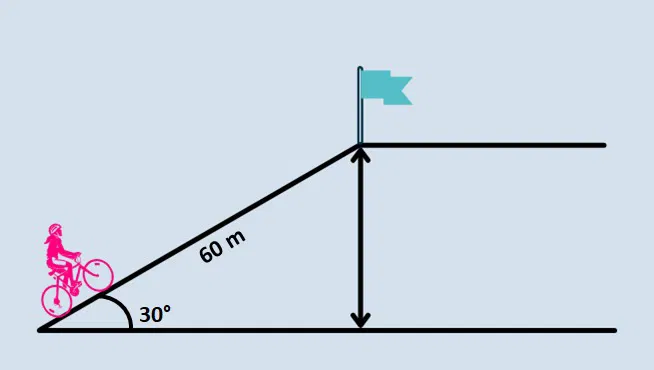

Sobre esse quiz
Quizz de Razões trigonométricas de triângulo, retângulo
você ira relembrar o conceito de Seno,Coseno e Tangente
Você ira responder o maximo de perguntas que conseguir a respeito de cada Exercicio e ao final verá qual a sua pontuação e nivel de conhecimento em matemática
Pergunta 1: A vista superior de um parque mostra dois caminhos para se chegar ao ponto C, a partir do ponto A. Uma das opçoes é ir para B e, depois, ir para C. Caso um visitante do parque queira ir direto para C, quantos metros ele tera caminhado a menos do que a primeira opçao?

Pergunta 2:Em uma região montanhosa, foi construido um teleferico conectando a base de uma montanha ao seu cume. Para essa construção, foi utilizado um cabo de 1358m, com uma inclinação de 30 graus em relação ao solo. Qual é a altura do cume da montanha, consideirando o comprimento do cabo e a angulação fornecida?°

Pergunta 3:Um telhado é tido como de duas águas quando há dois caimentos. Em uma obra está sendo construido um telhado onde, o encontro de suas duas águas estejam exatamente no meio da laje. O ângulo de inclinação de cada água em relação a lage é de 30 graus. a lage possui 24m de comprimento. Para encomendar as telhas antes mesmo da estrutura que irá sustentar o telhado estar concluído, é preciso conhecer o comprimento de cada água.
Pergunta 4: A figura abaixo representa um avião que decolou sob um ângulo constante de 40 graus e percorreu em linha reta 800m. Nesta situação, qual a altura que se encontrará o avião ao percorrer essa distância?

Pergunta 5: Um menino avista um ponto mais alto de um morro, conforme a figura abaixo: considere que eela está a uma distância de 500m da base do morro, calculea altura (h) deste ponto.

Pergunta 6: Pedro, localizado a 8m do chão, está observando om prédio vizinho. Sabendo que a sua distância para o prédio vizinho é de 8m entre as duas estruturas forma-se um triângulo, cujo ângulo ABC é de 105 graus, determine a altura do prédio en que Pedro está olhando.

Pergunta 7: Observe o triângulo acutângulo abaixo e determine o comprimento do lado AC e o ângulo formado no vertice A.

Pergunta 8:Observe o triângulo abaixo em função da medida B de lado AC determine as medidas dos lados AB e AC.

Pergunta 9: Em um triângulo retângulo, a tangente de um de seus ângulos agudos é 2. Sabendo-se que a hipotenusa desse triângulo é 5, o valor do seno desse mesmo ângulo é:
Pergunta 10:Observe o triângulo abaixo em função da medida B de lado AC determine as medidas dos lados AB e AC.
Tabela de Pontuação
| Pontuação | Avaliação |
|---|---|
| 0-2 | Não desista! Cada tentativa é uma oportunidade de você aprender |
| 3-6 | Parabéns! você foi bem mas pode melhorar |
| 7-10 | Parabéns! você é incrivel |
verifique suas respostas
Clique aqui para ver as respostas
- 1;3;5;7;11;13;17;19;23;27
- Não, pois é divisivel por 7 além de 1 e 91
- Equação: x2 + 2x - 4